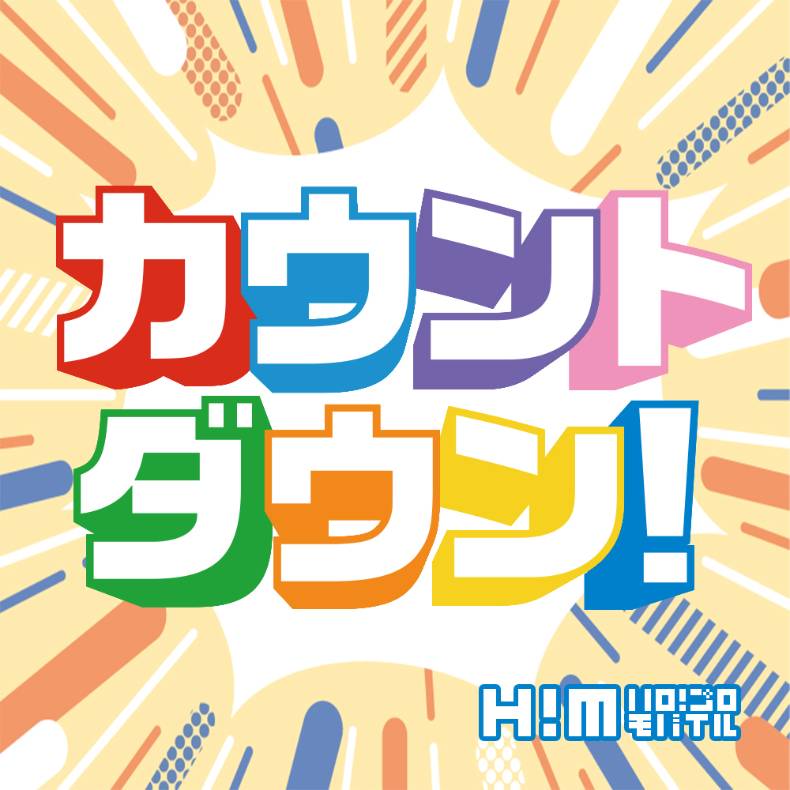

読む
ハロー！Q&A
3571 質問
グループとメンバーの回答を読む
読む
ハローペディア
480 項目
プロフィール・用語・関連リンク
読む
ツアー日記
557 記事
ツアー別に写真と本文をたどる
読む
日記・連載
2,726 記事
スタッフ日記とメンバー連載
読む
ハロモバメール
2,148 通
日付・メンバー別にメールを読む
観る
妄想動画
344 本
メンバー別の動画アーカイブ
観る
特設・季節イベント
75 特集
季節のメッセージと特設ページ

観る
バースデーカード
599 枚
年ごとに保存した誕生日カード

聴く
ハローラジオ
780 回
番組・回を選んで続けて聴く
該当するアーカイブはありません。
非公式の保存アーカイブです。元サイトで取得できなかった一部の内容は含まれません。